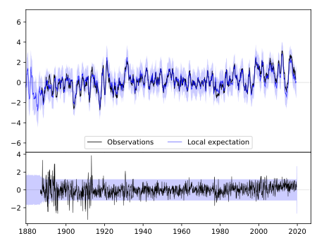
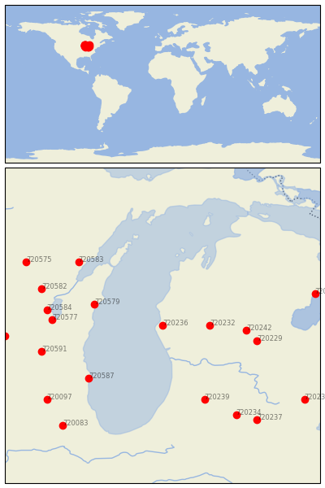
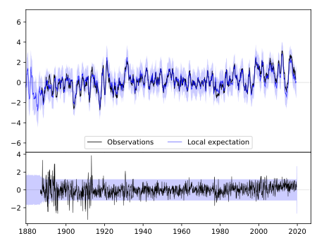
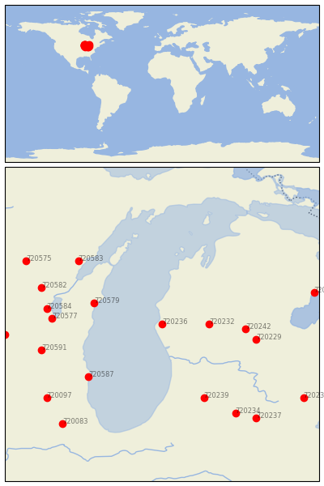

HART 3 WSW [USA]
 


| Neighbour | Name | Country | Distance | Lon/Lat | Years |
|---|
| 720236 | HART 3 WSW | USA | 0 | -86.4, 43.7 | 1886-2019 |
| 720232 | BIG RAPIDS WTR WKS | USA | 72 | -85.5, 43.7 | 1887-2019 |
| 720579 | MANITOWOC | USA | 113 | -87.7, 44.1 | 1851-2019 |
| 720242 | MT PLEASANT UNIV | USA | 129 | -84.8, 43.6 | 1887-2019 |
| 720229 | ALMA | USA | 148 | -84.6, 43.4 | 1887-2019 |
| 720587 | RACINE | USA | 158 | -87.8, 42.7 | 1855-2019 |
| 720239 | KALAMAZOO STATE HOSP | USA | 168 | -85.6, 42.3 | 1876-2019 |
| 720577 | FOND DU LAC | USA | 169 | -88.5, 43.8 | 1871-2019 |
| 720584 | OSHKOSH | USA | 179 | -88.6, 44.0 | 1871-2019 |
| 720583 | OCONTO 4 W | USA | 184 | -88.0, 44.9 | 1888-2019 |
| 720591 | WATERTOWN | USA | 193 | -88.7, 43.2 | 1871-2019 |
| 720582 | NEW LONDON | USA | 199 | -88.7, 44.4 | 1856-2019 |
| 720234 | COLDWATER ST SCHOOL | USA | 220 | -85.0, 42.0 | 1868-2019 |
| 720097 | MARENGO | USA | 237 | -88.6, 42.3 | 1856-2019 |
| 720235 | EAST TAWAS | USA | 241 | -83.5, 44.3 | 1883-2019 |
| 720585 | PORTAGE | USA | 242 | -89.4, 43.5 | 1890-2019 |
| 720575 | BOWLER | USA | 246 | -89.0, 44.9 | 1893-2019 |
| 720237 | HILLSDALE | USA | 248 | -84.6, 41.9 | 1880-2019 |
| 720083 | AURORA | USA | 262 | -88.3, 41.8 | 1857-2019 |
| 720231 | ANN ARBOR U OF | USA | 269 | -83.7, 42.3 | 1854-2019 |